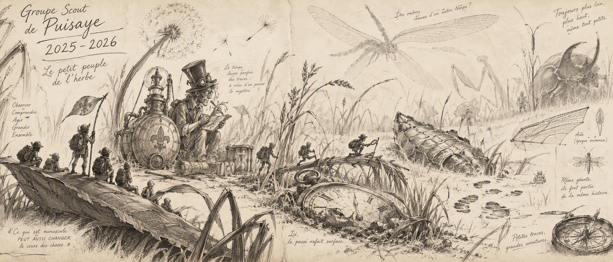

La fête du groupe
la voyante minimoy de Maud, la tente surelevée de Pierre et la clôture d'année
Le 1er week-end en autonomie
Seuls sans adultes un week-end entier !
Ballade dans les marais
Découverte des marais et bivouac à Saint-Sauveur
Arquian par niveaux
Entre toilettes improvisées, constructions, veillée dans le noir, machine à remonter le temps et grands éclats de rire
Le chant des Mashmallows sauvages
Dans le hameau des Guerriers, non loin de Toucy, les bosquets (...)
Le mini-camps de printemps
Trois jours de camp sous le soleil du printemps : construction d’une tente surélevée, veillée pascale, promesse, tyrolienne, progression personnelle et de nombreux éclats de rire partagés.
Préparation des camps : Forestage
Forestage et jeux....
Conte de printemps
par Augustine
Au musée d'histoire naturelle
Entre travail manuel, découverte du monde vivant et progression personnelle, cette journée a permis aux scouts de vivre une belle aventure faite de persévérance, de curiosité et de partage.